Skyline 靶向质谱环境能直观呈现出导入至 Skyline 文档的原始质谱仪数据信息。借助这些可视化功能，您可以执行操作如优化所测肽段和离子对以及调整整合边界等来对数据加以处理。最初开发 Skyline 的目的是利用选择反应监测（简称 SRM，亦称为多反应监测（简称 MRM））质谱进行定量分析，现在它的应用范围已经扩大到从数据依赖型串联质谱所获得的质谱数据的 MS1 谱图中去提取时间-强度色谱峰来用于肽段定量实验。
Skyline MS1 全扫描筛选1支持导入探索型蛋白质组学实验中使用数据依赖采集 (DDA) 模式获得的数据集。导入原始数据后，使用 Skyline 新开发的和原有的功能可以协助定量测量来自于多次重复测定采集的肽段母离子 MS1 信号。鉴于Skyline出色的数据可视化图，这种模式也可用于可视化以及更好地理解来自于其它“非标记”定量工具的定量结果。
本教程将介绍以下几个对有效利用 Skyline MS1 筛选至关重要的方面：
Skyline 旨在为靶向蛋白质谱研究提供一种独立于供应商的平台。它可以导入来自于供应商 Agilent、Bruker、SCIEX、Shimadzu、Thermo-Scientific 和 Waters 的原始数据用于 MS1 筛选，这样一来，您就可以将在Skyline获得的专业知识转移到任何一家有着以上供应商质谱仪的质谱实验室。
开始本教程之前，请下载下列 ZIP 文件：
https://skyline.ms/tutorials/MS1Filtering-22_2.zip
将其中的文件解压到您的电脑文件夹，如：
C:\Users\brendanx\Documents
这将创建一个新文件夹：
C:\Users\brendanx\Documents\MS1Filtering
如果您在开始学习本教程之前就一直在用 Skyline，最好将 Skyline 恢复为默认设置。要恢复默认
设置：

该 Skyline 实例中的文档设置现已重置为默认值。
由于本教程涵盖蛋白质组学主题，因此您可以执行以下操作来选择蛋白质组学界面：

Skyline 将在蛋白质组学模式下运行，Skyline 窗口的右上角随之显示蛋白质图标 。
。
您可以用多种方法开始编辑空白文档，但在本教程中，您将使用一组按序排列的表单（即“向导”），它将引导您逐步经历几个步骤：处理肽段搜索结果、设置目标以及导入质谱仪数据文件。
要将基于数据依赖而采集的串联质谱的肽段搜索结果导入 Skyline 文档，最简单的方法就是使用导入肽段搜索向导。
要保存您的新文档，请执行下列操作：
现在按下面的指示启动导入肽段搜索向导：
Skyline 将呈现如下所示的表单：

接下来，您就可以使用本向导从Skyline可支持的诸多肽段搜索引擎的输出结果来创建一个谱图库。关于受支持的搜索管道的完整列表，请参考靶向方法编辑教程。请注意，为尽可能快速地下载 ZIP 文件，您在本教程中将使用的文件已缩减至完成本教程所需的最小信息量。
通过执行下列操作，将搜索结果添加至您的库：
此时向导表单将显示如下：

Skyline 将创建一个与您的 Ms1FilterTutorial.sky 文档相关的新谱图库，创建过程中将显示进度。在其中保存了新谱图库的 MS1Filtering 文件夹里，现在可以看到两个新文件：

您还可以看到文件“MS1FilterTutorial.slc”，这是一个旨在改善库的加载时间的“Skyline 库缓存”文件。您可以将其删除，必要时 Skyline 会重新创建此文件。
如果您曾经使用 Skyline 创建谱图库，可能已经习惯于根据自己的喜好命名，并将其保存在您喜欢的任何位置。在这种情况下，Skyline 将使用与 .sky 文件相同的基本名称来创建库，这种方式与将特定色谱图存储到文档中的方式非常相似。与处理色谱图数据一样，后续您可以添加更多搜索结果，也可以删除搜索结果。
创建完库后，Skyline 将显示向导中的下一页，如下所示：

在这种情况下，Skyline 已找到了与用于创建谱图库所使用的与源文件相匹配的原始 WIFF数据 文件，并且谱图库似乎包含了保留时间信息。该信息是 Skyline 将鉴定的串联质谱谱图定位于其即将提取的色谱上所需要的。如果 Skyline 未能发现合适的数据文件进行色谱图提取，则需要您指定。如果创建的库无法在导入的肽段搜索文件中找到保留时间信息，Skyline 会告知您。参阅下面的“验证库保留时间信息”部分，以获得更多有关于Skyline在确定谱图源文件和来自肽段搜索文件的保留时间时所遇问题的解决方案。如想继续本教程：
此时将显示一个表单，询问您如何处理这两个 WIFF 文件的相同前缀：

向导继续前进至添加修饰页面，该页面列出了搜索结果中发现的但文档中尚未存在的所有氨基酸修饰。如有可能，它将会提示来自于与搜索中找到的氨基酸以及质谱组合相匹配的Unimod位点的修饰。
在本教程中，您只需要“Phospho (ST)”、“Phospho (Y)”和“Oxidation (M)”修饰。在列表中选中这些修饰，向导应显示如下：

您的文档可能已有其中一个或多个已定义的修饰（例如 Oxidation (M)），这种情况下列表看起来可能会有所不同。
向导将前进至配置全扫描设置页面，您将在该页面执行以下操作：
本页面中所有其它字段应设置为默认值，向导显示如下：

在 MS1 筛选部分中，您将看到下列默认设置。
| 注意：选中使用高选择性提取复选框，可将提取范围缩小到仅 FWHM值，现在这是复杂样品的推荐设置。对于其它数据集和实验，可以根据仪器性能调整分辨率设置。 |

在某一时间范围内提取的一系列强度将构成您在 Skyline 中看到的色谱图：

在保留时间筛选部分，注意选择仅使用 MS/MS ID 5 分钟之内的扫描。这表明，对于只具有 1 个 ID 的肽段，Skyline 将围绕此 ID 提取 10 分钟的色谱图。对 3 分钟以上范围的一组 ID，Skyline 将提取 13 分钟的色谱图，即在两侧各增加 5 分钟。当某个运行中缺乏某个特定肽段的 ID 时，Skyline 将使用其它运行中该肽段所对应 ID 的保留时间来确定在该运行中提取这一肽段的色谱图的时间范围。
随即会进入导入 FASTA页面。您可以导入一个包含全部人类 SwissProt 蛋白质条目的 FASTA 文件，以获得全面的已鉴定肽段列表（此 MS 实验涉及人类 MCF7 乳腺癌细胞系样品及后续磷酸化肽富集）。但因文件大小的关系，您将通过执行下列步骤导入一个小得多的仅含 12 个人类蛋白质的 FASTA 文件：
此时向导将显示如下：

Skyline 将模拟消化此文件中的 11 个蛋白质，并建议从您导入的具有肽段搜索结果中的匹配谱图的 FASTA 文件中添加 50 个肽段和 51 个肽段电荷态母离子。

Skyline 将开始导入这两个 WIFF 文件并从中提取色谱图。
您将看到如下所示的进度图：

导入完成后，在检验色谱图数据前先仔细检查您创建的谱图库。
在您使用肽段搜索管道的结果创建 MS1 筛选的谱图库时，如果您未曾使用此结果完成过此类操作，应确保生成的谱图库里包含必要的保留时间信息，以支持下文介绍的 Skyline 功能。使用导入肽段搜索向导的好处之一是，Skyline会在您的谱图库缺少必要的信息时会尽早通知您。
要验证您刚刚创建的库是否包含 MS1 筛选峰选择和峰注释的保留时间信息，请执行下列步骤：
Skyline 将再次提出使用在谱图库中检测到的但在导入肽段搜索向导中您选择不添加的修饰。

现在选择在谱图库浏览器中使用这些修饰并不会将其加入目前的文档，除非您使用谱图库浏览器将使用这些修饰的肽段添加到您的文档。但是，这些修饰对于本教程并不重要。您可以执行下列操作，在不使用这些修饰的情况下继续本教程：
将出现如下所示的谱图库浏览器：
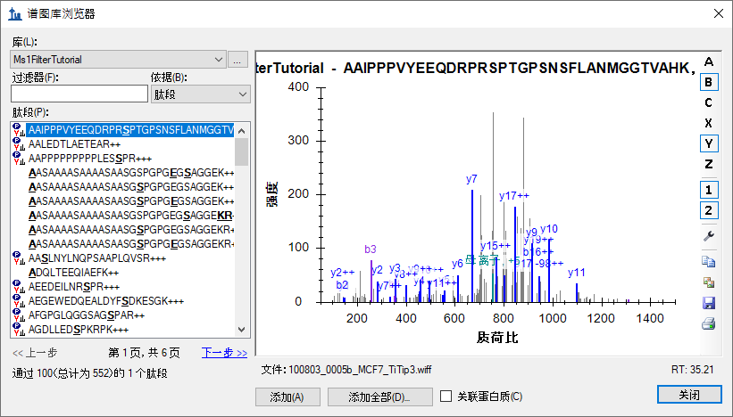
在肽段列表中，序列文本左侧没有图标的肽段包含有您未选择使用的某种修饰。
在谱图下方可以看到文本“100803_005b_MCF7_TiTip3.wiff”和“RT: 35.21”。“RT”值表示含有保留时间信息，“文件”值表示已经与您导入 Skyline 的文件正确关联。“文件”值无需与您导入的文件完全匹配。Skyline 认识到许多肽段搜索管道会涉及到将原始仪器数据转换为 mzXML、mzML、MGF、MG2 等格式的情况。故而大体上， Skyline 会寻求基础名称匹配，其中“basename.mgf”与“basename.wiff”成功匹配。由于某一特定管道需要更大的灵活性，此匹配也有不敏感的情况，因此“BASENAME.mzML”将匹配“Basename.RAW”，且在处理多点扩展时，会将“basename.c.mzXML”与“basename.raw”匹配。然而，如果您看到一些类似“F011852.dat”或其它与您想导入 Skyline 的数据没有相同基础名称的搜索输出文件，则需查看您的搜索管道，并且可能要与 Skyline 团队一起解决此问题。关于具体的 Mascot .dat 文件，建议您查询 Skyline 网站的“Mascot 搜索结果 ID 注释缺失”页面。关于其它问题，建议您在 Skyline 支持版块（在帮助菜单上单击支持）上提问，寻求解决此类问题的帮助。
现在按向下键选择其它肽段，您将看到“文件”和“RT”值发生变化。完成检查串联质谱谱图及其源文件和保留时间后，执行下列操作返回到您创建的文档：
您应在 Skyline 目标视图中看到 50 个肽段（计数见状态栏）。
您的 Skyline 文档将显示如下：
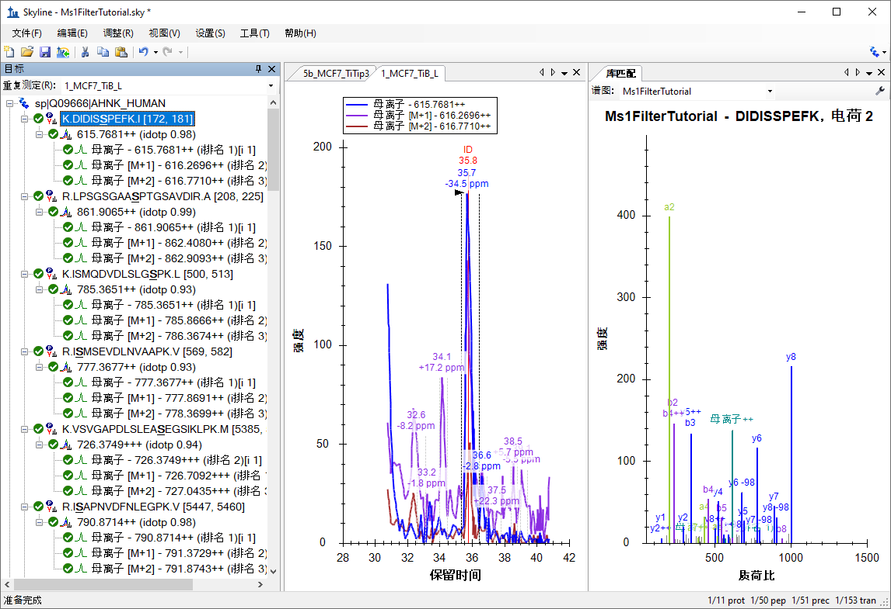
现在文档已通过所导入的两项 DDA 运行完成了 MS1 筛选的全部配置。由于在导入向导中选择了仅使用 MS/MS ID 5 分钟之内的扫描设置，本视图中的色谱图长度约为 10 分钟（31 至 41 分钟）。请注意，在为 MS1 筛选进行 Skyline 文档设置时，您将在由三重四级杆 SRM 实验所产生的子离子离子对（例如 y-离子）的地方，看到不同的母离子同位素峰值，例如对于肽段 DIDISSPEFK，会显示这些母离子同位素峰值：母离子 - 615.7681++、母离子 [M+1] - 616.2696++ 和母离子 [M+2] - 616.7710++。
如何生成有用的汇总图，比较多个运行中的峰面积：
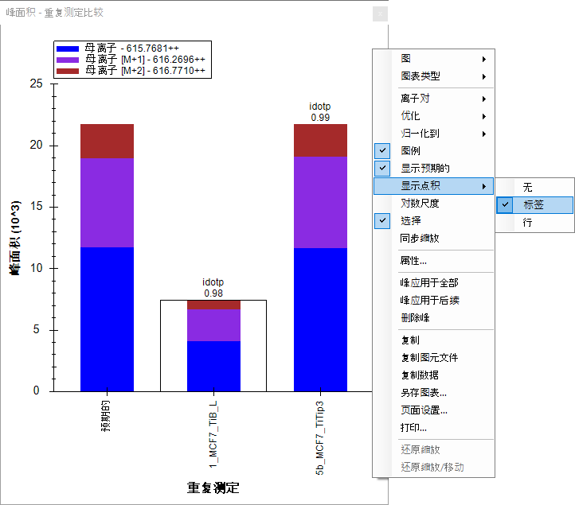
您可以通过下列操作将峰面积窗口停靠在您需要的位置：
您的 Skyline 文件将显示如下：
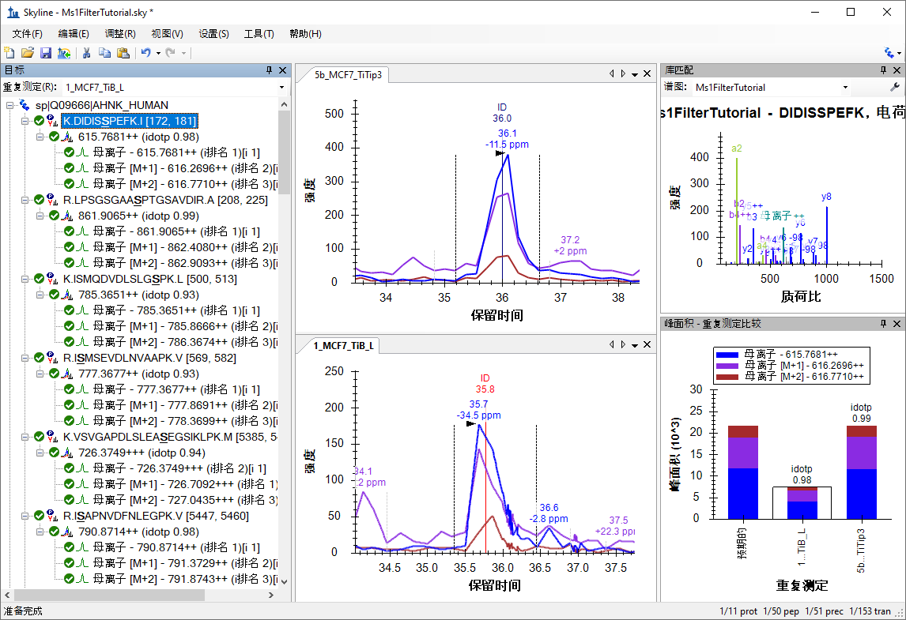
色谱图视图显示了所有母离子同位素离子的 MS1 提取离子色谱图，包括 M（蓝色）、M+1（紫色）、M+2（棕色）。如果您使用过 Skyline 对 SRM 数据进行定量分析，可能对所选峰下面对应的保留时间注释较为熟悉，但是会看到一个新的质量误差注释，这是被注释的色谱图里所有整合点的质量误差的加权平均值（本例中为 M 或蓝线）。如果未看到质量误差，在色谱图视图中单击右键，然后单击质量误差。这种质量精度或许并不是您所期望的现代高分辨率仪器的误差性能，但如前所述，此数据采集自较早的 QSTAR Elite。
您还会在提取的离子色谱图中看到垂直线，图顶部有 ID 注释。ID 代表“确认”，指示对特定肽段有可信的确认的采样串联质谱谱图的保留时间。红线表示这是库匹配视图目前显示的谱图。如果您在上部的图中单击 ID 注释，库匹配视图将显示您从 5b_MCF7_TiTip3 重复测定中已确认的谱图，现在将保存于此前您已创建的库中。您还可以从库匹配视图顶部的谱图下拉列表中选择重复测定的名称和保留时间（36 分钟）（而不是从您单击 ID 注释前从非冗余库中选择的最佳得分谱图）。您可以单击 ID 注释或使用谱图下拉列表在两次采集的谱图中来回切换，会发现它们非常相似。
在查看本文档中其它 50 个肽段中的一些肽段前，请先执行以下操作：
接下来确保鼠标位于目标视图中，并使用键盘上的向下键每次选择一个肽段。对于前三个磷酸化肽段，会看到它们在每个重复测定里都确认了一次，并且库匹配图表中显示它们的谱图中有少数注释为“-98” (-H3PO4) 的较为显著的中性丢失离子。
对于第四个肽段 ISMSEVDLNVAAPK，您会发现仅 5b_MCF7_TiTip3 重复测定中有 ID 注释。使用 5b_MCF7_TiTip3 中的该肽段对应 ID 的保留时间来校准 1_MCF7_TiB_L 重复测定中该肽段对应的峰。要查看校准的 ID，请执行以下操作：
您应该会看到一条浅蓝色的线出现在 1_MCF7_TiB_L 重复测定中整合峰的边界内侧。尽管如此，这种情况下峰很可能在整合边界的左侧。如要纠正这一问题：
色谱图将显示如下：
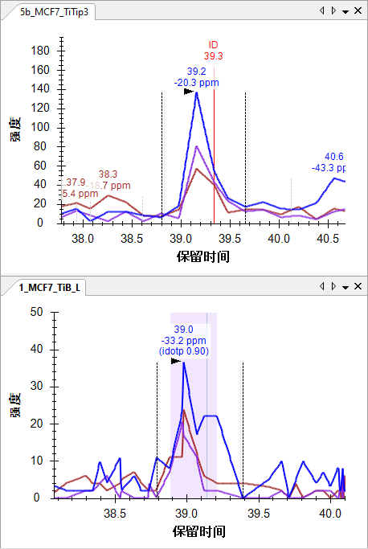
为深入了解保留时间校准的工作原理，请执行下列操作：
Skyline 将呈现如下所示的窗口：
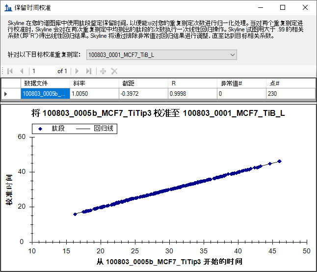
此窗口显示运行之间用于校准时间的线性回归点。Skyline 会计算谱图库中两两谱图源文件间这样的线性回归。当出现 2 个以上的运行时，会看到针对以下目标校准重复测定下拉列表中选定的运行以外的运行各占据一行。当某个运行中缺少对应 ID 时，就可以如上图所示，使用这种线性回归方程来对各运行之间的串联质谱ID 时间进行映射，从而改善峰的挑选过程。关于使用线性回归映射保留时间范围的更多详情，请参见 iRT 保留时间预测教程。
在本案例中，可以看到两个运行之间的保留时间重复性相当好，斜率为 1.005，截距为 -0.3972，相关系数 (R) 为 0.9998，无异常值。正如表单顶部段落所述，当 R 低于 0.99 时，Skyline 将丢弃异常值，直至发现一组 R 大于 0.99 的肽段，并使用所生成的线性方程。
您还可能发现，计算此回归使用了 230 个点，但您的文件仅包含 50 个肽段，而且这 50 个肽段并非都在这两个运行中全部确认。但请记住，您创建的库共包含 552 个肽段，其中有许多肽段包含本文档未使用的修饰。这似乎表明两个文件中都确认了 552 个肽段中的 230 个。Skyline 尝试使用同时存在于这两个搜索结果文件中的所有 ID 来进行回归拟合。在某个运行中出现多个 ID 时， Skyline 将使用最早的 ID 保留时间，因为这个保留时间可能比稍晚的保留时间或甚至平均值更稳定。例如，我们发现在某些情况下，梯度洗脱过程中更早洗脱的肽段再次被确认。
在有了基本的了解并且按此方法配置 Skyline后，您现在可以快速审查本文档中的所有 50 个肽段。您只需要单击目标视图，并使用向下键依次选中每一个肽段。要了解目前从 50 个肽段中被选中的肽段数，可以查看 Skyline 窗口右下方的状态栏：

在肽段 ISMSEVDLNVAAPK 后面，可以看到有 4 个含有可接受整合峰的肽段，它们进行峰整合是可以接受的，虽然 VSVGAPDLSLEASEGSIKLPK 可能依据5b_MCF7_TiTip3 略作调整。其中一部分肽段在两个运行中都有 ID，另一部分肽段仅在其中一个运行中有 ID，并且 Skyline 已使用保留时间校准挑选了正确的峰。
对于第 9 个肽段 SSKASLGSLEGEAEAEASSPK，它在1_MCF7_TiB_L 中缺少对应的 ID，且峰整合看起来有点偏：
|
5b_MCF7_TiTip3 |
1_MCF7_TiB_L |
使用鼠标上的滚轮（朝您自己回滚）缩小 1_MCF_TiB_L 图，直至能看到与 5b_MCF7_TiTip3 图相同的峰：
这是处理色谱图数据的一个极其重要的方面：正如您的目标肽段可以在多个运行中以高度相似的时间被洗脱出来，其它肽段也如此。目标（37 分钟）两侧（33.1 分钟和 40.5 分钟）的两个峰由两个其它肽段形成，如果这两个峰与目标肽段共同洗脱出来，则将被视为干扰。但是，如果它们不是被共同洗脱出来，则来自于其它肽段的信号就可能创建一个重复的视图，它有助于指导您定位至目标保留时间，即便在极低的信号水平下也能做到这一点。与 MS1 筛选一样，在使用选择性较低的方法时尤为如此，因为使用色谱图提取范围内的信号可以看到更多的肽段。
现在执行下列操作，校正 1_MC7_TiB_L 的整合范围：
您将在峰面积图中看到，此操作将峰的同位素分布点积值 (idotp) 从 0.87 改善为 0.9，并将质量误差从 -10.8 略微改善至 -9.4 ppm。
在继续处理剩余的肽段之前，可以花些时间查看提取的色谱图中捕捉到的其它两个峰。40.5 分钟的峰在
所有 3 个母离子（M、M+1 和 M+2）通道的信号都非常好，但还可以看到，质量误差一致性也比预期小（-20.9 和 -38.3 ppm）。
这步操作会使得 Skyline 挑选这些峰，并在峰面积图中显示它们的 idotp 值低于此前选择的峰（0.86 和 0.87，而此前为 0.9 和 0.99）：
您可以查看标示“预期的”色谱柱中的分布，因为 M+2 和 M+3 同位峰比目标肽段的预期同位素分布强度小，这表明产生此峰的肽段中碳原子比目标肽段中的少（因此产生 13C 的机会较小），而目标肽段采用的是大约 37 分钟时的一个串联质谱ID。
转向第 33 分钟时的峰，可以看到，此峰没有任何信号标明属于目标肽段的单一同位素峰质荷比，但由于有与 M+1 和 M+2 的强度非常相似的峰，所以与目标肽段的 M 和 M+1 预测同位素分布相似。该肽段在 5b_MCF7_TiTip3 中的质量误差是 +25.8 ppm，在 1_MC7_TiB_L 中完全整合时质量误差为 +5.6 ppm。虽然这并不像 40.5 分钟时的峰那样糟糕，但平均误差达 +15.7 ppm，仍比 37 分钟峰的平均误差 -3.5 ppm 差很多。
要想更全面地了解 33 分钟处峰的同位素分布问题，请执行下列操作：
Skyline 将弹出如下所示的窗口：
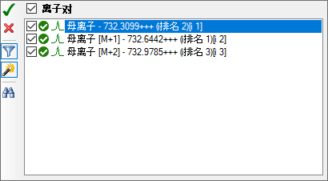
如果仅看到这三个母离子离子对：
这样 Skyline 就会显示此肽段母离子所有可能的离子对：
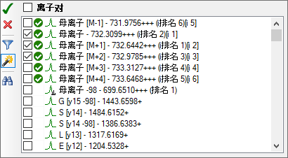
绿色虚线表示 Skyline 已获得色谱图数据的离子对。Skyline 自动提取同位素分布中所有峰的色谱图，预计至少占据整个分布的 1%。此外，Skyline 始终提取 M-1 的色谱图，因为在该质荷比下，没有干扰的挑选正确的峰一般不会产生信号。
这项操作将在图中增加 M+3 和 M+4 的色谱图，您将看到在 33 分钟处峰信号强度高于 37 分钟处鉴定的峰。在使用 Skyline 处理任何类型的色谱图数据时，可靠的保留时间重复性的作用相当重要，其重要性无论怎么强调也不为过。
您现在可以相当确信，33 分钟时的峰确由另一种肽段产生，其原子组成与目标肽段非常相似，同时也带有三个电荷，不同之处仅仅在于其单一同位素峰质量比目标的大 1 Dalton。
您还可以通过简单的点击界面，检查从中提取了色谱图的 MS1 谱图。现在这是快速了解 33.2 分钟时峰值与 37.4 分钟时峰值之间差异的最简单方法。要获得这样的新视角，请执行以下操作：
这样 Skyline 就会显示全扫描视图，显示如下：
此图应变为如下所示：
在色谱图中观察到的差异在这些谱图中也应当一清二楚。
接下来，有了Skyline中这些能解读色谱数据的工具，您不必花费太大力气就可以找到被真正干扰的第一个肽段。您会看到双磷酸酸化肽段 ASLGSLEGEAEAEASSPKGK 的色谱图如下所示：
|
5b_MCF7_TiTip3 |
1_MCF7_TiB_L |
同样，5b_MCF7_TiTip3 中有肽段的 ID，但在 1_MCF7_TiB_L 中没有。根据与 5b_MCF7_TiTip3 中 ID 的校准，挑选了 1_MCF7_TiB_L 中的峰。M+2 色谱图中该峰显示出几乎不受其右侧峰的干扰，丰度最大的峰质量误差为 -33.7 ppm。如果使用鼠标滚轮再次缩小，会看到两图均在 36 分钟时有一个非常相似的峰，质量误差分别为 +20.7 和 +27.5 ppm，idotp 值分别为 0.78 和 0.76（单击保留时间注释去选择峰后，即可从峰面积视图中看到）。
5b_MCF7_TiTip3 的整合边界实际包括 M+2 的干扰，事实上该色谱图中的其它峰足够接近，以致于即使非常小心的手工整合，也似乎不太可能完全排除其信号。如果经过尝试，可以用 0.94 idotp 和 -9.7 ppm 质量误差得到整合的峰。
您可以使用相同的方法添加 M+3 和 M+4，并发现干扰峰可能由另一个带 3 个电荷和质量大 2 Dalton 的肽段产生。
在 AEGEWEDQEALDYFSDKESGK 处还有两个肽段，您会发现一处更强的干扰，其信号甚至更难排除。
|
5b_MCF7_TiTip3 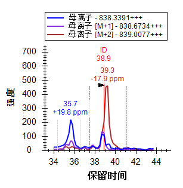 |
1_MCF7_TiB_L 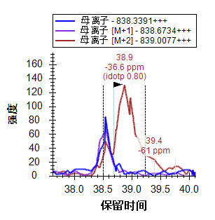 |
为此肽段添加 M+3、M+4 和 M+5 色谱图，可以看到在母离子空间内的这处特定质量和保留时间的组合非常拥挤：
|
5b_MCF7_TiTip3 |
1_MCF7_TiB_L 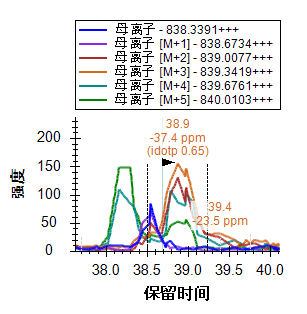 |
为获得该肽段无干扰的整合峰，必须删除 M 和 M+1 之外的所有色谱图。现在执行此操作，然后适当调整整合边界。到目前为止，虽然您可能希望得到具有更大选择度的方法，但实际上仅通过 MS1 光谱就得到了许多有用的定量数据。您希望尽可能地得到排名最高且没有明显干扰的母离子以便于定量统计分析。在可接受的峰确认下，此操作可能导致您从该教程数据中看到的这种干扰的影响较为有限。
继续审查肽段，在到达第 22 号肽段 ALVEFESNPEETREPGSPPSVQR 时，您只需要进行微小的整合调整。
此处您会发现文档包含 ALVEFESNPEETREPGSPPSVQR 和下面的 ALVEFESNPEETREPGSPPSVQR，两者的母离子质荷比均为 879.0727。在本例中，搜索引擎 Protein Pilot 确认前者出现在 5b_MCF7_TiTip3 中，后者出现在 1_MCF7_TiB_L 中，但色谱图清晰地显示两者确认的峰均出现在大约 32.5 分钟附近。
更为有趣的是，可以看到两个峰实际上非常接近，有相同的质荷比，至少同位素分布非常相似。
|
5b_MCF7_TiTip3 |
1_MCF7_TiB_L |
在 1_MCF7_TiB_L 中，同位素分布和质量误差使两个出现在31.5-33分钟之间的峰看起来比 5b_MCF7_TiTip3 中的两个峰更不同，但这种差异可能仅由方差导致。增加 M+3、M+4 和 M+5 后，就能看到两个峰保持大于 0.9 idotp 值（再次分别整合和查看峰面积视图，然后撤销）。由于此肽段可能有 4 个不同的磷酸化位点，两个峰可能是同一个肽段的不同单一磷酸化状态，或有可能共洗脱情况的磷亚型。建议在 MS1 筛选中（搜索引擎输出之外）仔细评估潜在的亚型。
继续下探到第 25 个肽段，会发现 YGPADVEDTTGSGATDSKDDDDIDLFGSDDEEESEEAKR，本文档中最长的首个带 4 个电荷的肽段母离子。由于该肽段分子量大，其同位素分布与分子量较小、带 2 个电荷的肽段差异很大，甚至与您一直考量的分子量较大、带 3 个电荷的肽段差异也很大。不含 13C 原子的单一同位素肽段，其预期出现频率低于 M+1 和 M+2 型离子。可以看出，这些色谱图中出现的正是这种情况，所产生的 idotp 值分别为 1.0 和 0.99，且与预期分布一致，如下所示：
就像您一直在做的一样，您可以使用离子对挑选列表增加从 M+3 至 M+7 的色谱图，所有色谱图都应包含强度大于整体同位素分布 1% 的峰，并且会看到 idotp 值仍非常高，为 0.98：
在色谱图中可以发现，这是文档中唯一在单个运行中被确认多次的肽段（在 5b_MCF7_TiTip3 被确认 3 次）。
您可以执行下列操作，将色谱图调整在相同的尺度内，这样更容易解释在重复测定间这些 ID是如何校准的：
色谱图现在将显示如下：
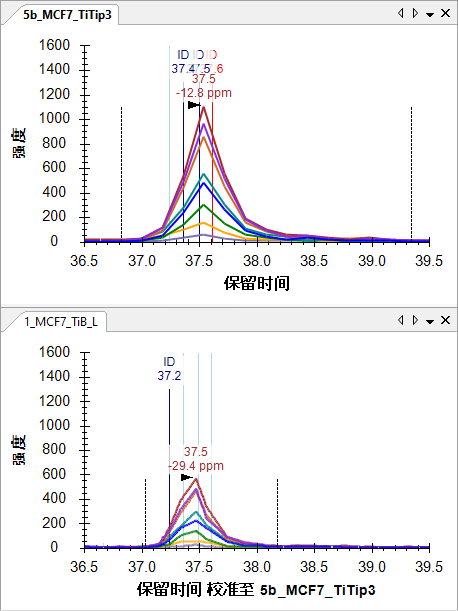
要查看从中提取色谱图点的 MS1 谱图中的同位素分布，请执行以下操作：
随即全扫描视图将显示如下：
在色谱图中，您会看到校准后的 ID 排列非常清晰，并且峰的校准良好。在关闭 Y 轴自动调整的情况下进行同步缩放，有助于感受各个峰的相对高度。
您可以单击色谱图上的 ID 注释，审查搜索引擎确认此肽段的谱图，也可以单击库匹配视图顶部的下拉列表，并使用箭头键在匹配的谱图中向上翻页和向下翻页。对不同运行之间的谱图是来自于同一个肽段的判断可能需要一些想像力：
5b_MCF7_TiTip3（37.61 分钟）
1_MCF_TiB_L（37.03 分钟）
但是您应该非常确信，两个运行之间的色谱图峰测量的是相同的肽段分子。
DQVANSAFVER 肽段有另外一种有趣的干扰：
|
5b_MCF7_TiTip3 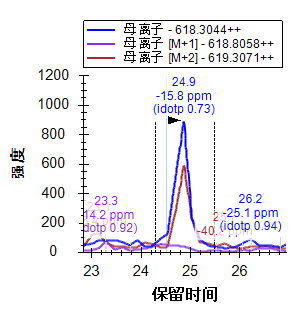 |
1_MCF7_TiB_L 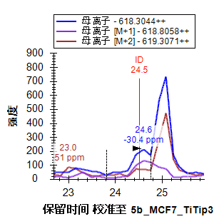 |
在 1_MCF7_TiB_L 中，该肽段在 24.5 分钟被确认。然而，在两次重复测定中，您会看到在大约 25 分钟时出现强干扰峰。尽管此干扰仅出现在 M 和 M+2 色谱图中，但它仍表示这是一个干扰肽段。鉴于目标肽段带 2 个电荷，这就表明干扰肽段带 1 个电荷。而 5b_MCF_TiTip3 中的目标肽段信号非常弱，且干扰非常强，因此很难看到目标峰，即便在 M+1 色谱图中也是如此。
在两个重复测定采集中都存在这种严重干扰的情况下，应谨慎操作，并从 MS1 定量中去除此肽段。如果您确实希望测量该特定肽段，可能需要使用一种选择度更大的方法，比如 PRM 或 SRM。
本文件中剩下的 7 个问题大多您已看到过，您现在希望的是使用好的工具理解并解决这些问题，下面将列举那些受到关注的问题，不过您可以随时忽略并继续下一部分：
完成以上步骤并将现在的 50 个肽段加入您的文档后，这些肽段的峰都将整合得相当好。先保存当前文档，然后再继续下一步操作：
随后执行下列步骤，消除本文档多余的色谱图数据，以使文件尽可能小以便于共享：
最小化结果表单现在将显示如下：
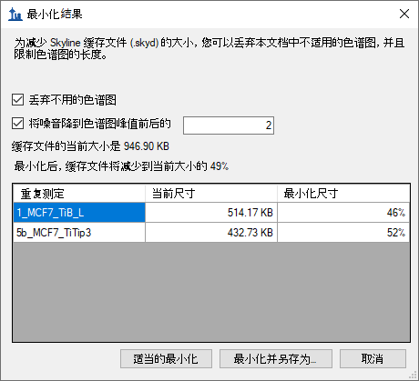
表单显示，预期此操作可将缓存文件的大小从大约 947 KB 减少为当前大小的 49%，即大约 464 KB。
如果再按下 Shift-F11 进行缩小，则可以查看肽段在新文档中的色谱图，并看到色谱图仅在超出整合边界两个方向各 2 分钟的范围内延伸。
色谱图最小化在为大型实验创建文档时可能非常有用，您可以将它作为某一文章的附件数据来与别人共享。您可能还希望可以在线得到原始数据，但最小化的 Skyline 文档将以很小的下载成本为您提供数据的丰富视图。
如上所述，使用 DDA 的多次重复测定研究显示对串联质谱的采样过疏，而且并非所有肽段在每个重复测定中都有串联质谱确认。MS1 筛选通过此前描述的 RT 校准方法可以克服此问题。不过，在您从最初的纯粹探索转变为所要了解的肽段数量相对较多的情况时，可以使用 Skyline 为您的 DDA 实验导出内含物列表，这种方法叫做“准确内含物质量筛选”2。内含物列表方法可以增加您所关注的肽段在非定向 DDA 实验里成功采样的机会。
要从 Skyline 教程文档中为后续的 MS1 筛选导出内含物列表，请执行下列步骤：
这就是说，您可以尽可能多地使用本教程的仪器方法导出，除非您已安装某个受支持的供应商（SCIEX Analyst 或 Thermo Xcalibur）的仪器软件系统。对于从 Skyline 导出的所有方法，建议您在计划运行该方法的仪器控制电脑上运行 Skyline 并执行导出功能。因为即便您的实验室里有一台受支持的仪器，仍有可能不会在这台仪器上执行本教程的操作，您可以在需要之时完成上述步骤。
在本教程中，您学习了一些最基本、最重要的功能，了解了如何使用 Skyline 从 DDA 实验数据中的 MS1 扫描提取定量信息。幸运的是，大多数此前已有的 Skyline 功能仍同样适用于 MS1 提取的色谱图和最初为其设计的 SRM 色谱图。因此，建议您花大量时间了解其它 Skyline 教程和教学视频中演示的材料。虽然使用从 MS1 扫描中提取的色谱峰面积的想法由来已久，但 Skyline 直到现在才为探索这种数据类型提供了丰富的环境。即便您使用其它定量工具进行 MS1 定量，仍可以使用 Skyline 来审视和验证您的结论。您也可以使用 Skyline 来审视为其它采集方法（如 DIA）创建谱图库所使用的 DDA 数据。这势必会加深您对数据、数据质量和潜在问题的理解。
如果您希望查看原始 MS1 筛选文献中实际处理的数据集1，请访问下列链接，从中可以下载如上所述的最小化文档：
http://proteome.gs.washington.edu/supplementary_data/MS1_Filtering/minimized/
您可以浏览上一层目录以查看完整的 Skyline 文档和原始数据。
1. Schilling, B. et al. Platform-independent and Label-free Quantitation of Proteomic Data Using MS1 Extracted Ion Chromatograms in Skyline APPLICATION TO PROTEIN ACETYLATION AND PHOSPHORYLATION. Mol Cell Proteomics 11, 202–214 (2012).
2. Jaffe, J. D. et al. Accurate Inclusion Mass Screening. Mol Cell Proteomics 7, 1952–1962 (2008).